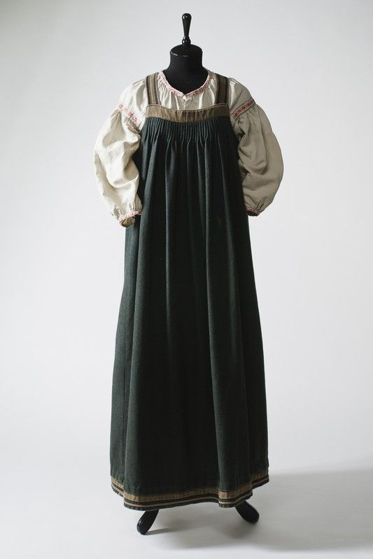
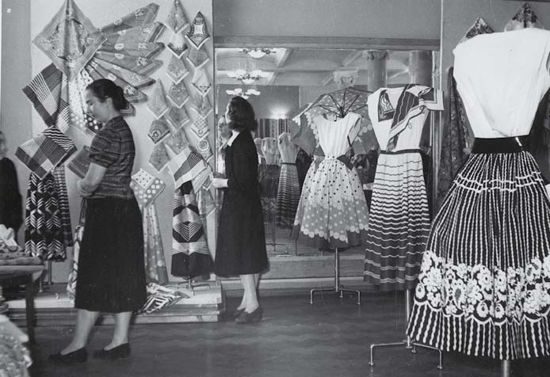
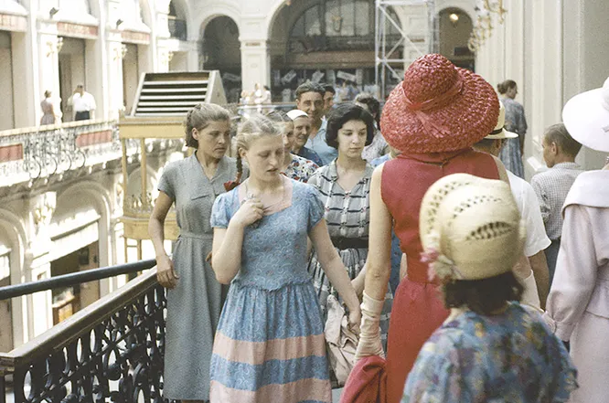
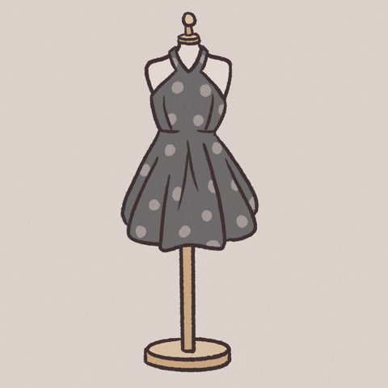
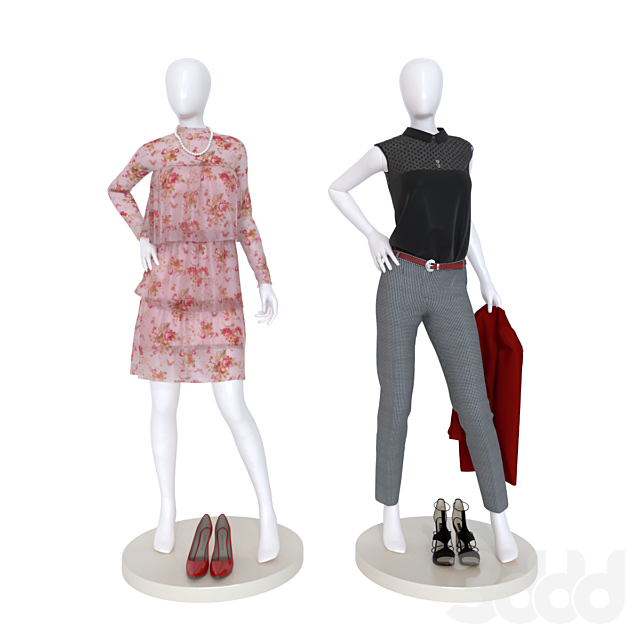
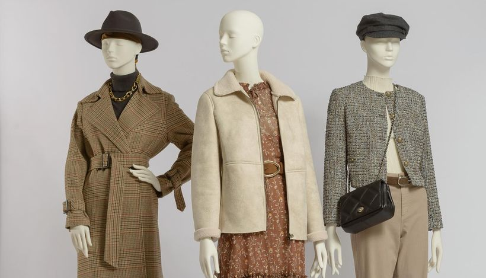

Одежда на Руси
Каждый исторический период оказал сильное влияние на женскую одежду. История женского народного костюма достаточно интересная и богатая. Одежда русского народа начала формироваться еще в дохристианскую эпоху, процесс этот был тесно связан с культурой Руси и языческими верованиями.История русского женского костюма максимально точно отражает культурное и духовное развитие народа. Основные элементы женского наряда сформировались еще в период Древней Руси – это длинная рубаха «сорочица», которая отличалась прямым кроем и прямыми рукавами, шилась она из домотканого полотна.

Одежда в Императорской России
Реформа затронула и женский костюм. Тяжёлые сарафаны, скрывающие формы тела, закрытые рубахи отошли на второй план. Отныне женщины должны были одеваться в корсетные платья с глубоким декольте. Эти платья, как и мужские костюмы, украшали искусная вышивка и кружева.


Советская одежда
Внешний вид простых советских женщин в 1950-е годы мало чем отличался от внешнего вида женщин в 1940-е, многие из них, с позиции моды нового десятилетия, были безнадежно старомодны. Всё те же цветастые ситцевые, или в лучшем случае крепдешиновые платьица, поверх которых надевался «плечистый» бесформенный пиджак, костюмы с прямыми юбками и мужеподобными жакетами, тяжёлые массивные трапециевидные пальто, а также прочие вещи, ушедшие из мировой моды в конце 1940-х, в СССР многим пришлось носить ещё долгие годы. Модный переворот 1947 года, совершенный Кристианом Диором, в стране, где людям зачастую приходилось довольствоваться валенками, ватниками, донашивать военные шинели, начнет частично ощущаться только с середины 1950-х.
 
Одежда в современной России
В отсутствие развитой индустрии другой сложной задачей было создание полноценного бренда прет-а-порте. Пионером этого направления стал выпускник Текстильного института Алексей Греков с его маркой Grekoff. Выдающимся дизайнером он не был, но очень хорошо чувствовал дух времени и конъюнктуру. Греков сделал ставку на качество, грамотный маркетинг и клиентуру, состоявшую из первых русских капиталистов, а также сразу начал выпускать и женские, и мужские коллекции. Отшивал их в Италии из итальянских тканей и привозил в Москву. Уже в 1998 году дизайнер открыл собственный магазин и запустил джинсовую линию, а еще стал первым, кто выпускал под своим именем полноценные коллекции – с обувью, аксессуарами и даже ароматом.

 Мода
Гардероб